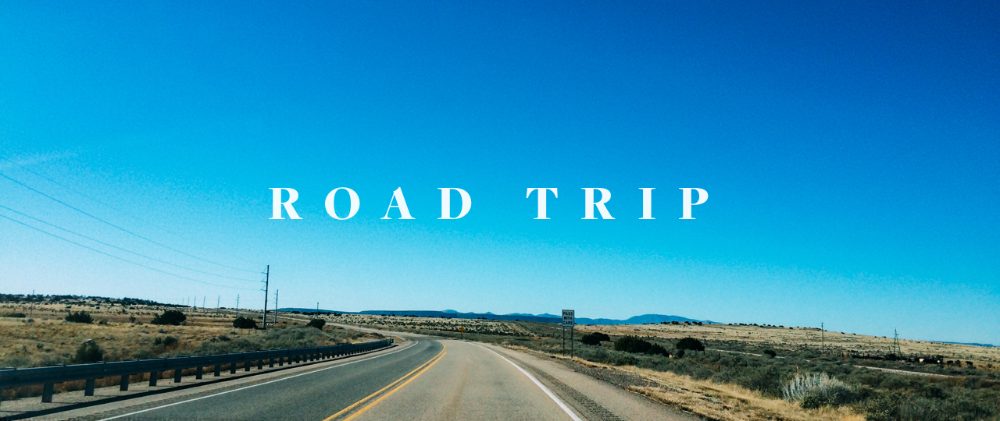
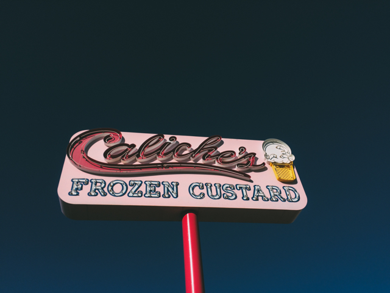

-

Road Trip
New Mexico is a large state and you often have to drive several hours to get from on of it's wonders to another. The drive is never dull. Us being from New York and having never explored the Southwest were in awe of the mountain ranges, deserts, and plains. Take a look at our journey below.
We started our journey in Albuquerque, driving north towards Santa Fe. After a couple days in Santa Fe we took a 4 hour hour trip south to the town of Alamogordo and White Sands. After our visit at the National Monument we drove northwest to the town of Truth or Consequences. It's a quick 2 hour drive from Truth or Consequences to Albuquerque.
McGinn's Pistachio Tree Ranch
Home to the world's largest pistachio statue, McGinn's was a nice pit stop on the way to the White Sands. The country store offered a variety of souvenirs along with a free tasting of all their pistachios. They have everything from sweet toffee or chocolate, to spicy chili pistachios.
The landscape was often flat plains with mountains in the background. Sometimes there was the occasional train. The blue skies offered a calming contrast against the tan desert.
Rizo's
Rizo's Mexican Restaurant was a great place to stop on our way to the White Sands. They served very authentic mexican food. The horchata's were great.
Also in the town of Alamogordo is a retro themed frozen custard shop. We still indulged in this treat even though it was 50 degrees in December.